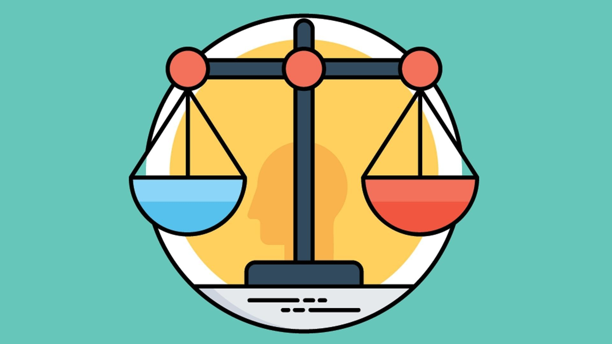

Gen AI Acknowledge.
A reflection on my usage of GenAI and MT for my completion of this assessment
How AI was used and How they support my learning ?

Translation Using ChatGPT(GenAI) And Google Translator
I used ChatGPT as the translator to correct my grammar and I found that sometimes AI tried to change my meaning. To solve with this, I used the constraints word to control my meaning that "Do not change my meaning and give more information" For this Assessment,

CSS Code Created Using ChatGPT (GenAI)
I used ChatGPT to help me generate CSS code in line with the class guidance by providing context, specifying the purpose, and clearly listing what I was looking for. I also used it as a code translator to better understand the meaning, as I sometimes forget the exact use of certain code elements, especially when their names are very similar.

Image created using ChatGPT (GenAI)
I used ChatGPT to generate images for the reflective design section, focusing on imagery and tone. I began by using the prompt: “Create a picture about a handcraft community including crochet, knitting, and embroidery.” I also included keywords that described the tone and style I wanted. To help guide the output more precisely, I used constraint phrases. However, ChatGPT did not generate consistent result. It produced a different image each time I made a request. To solve this issue, I added a constraint which is Do not change the previous image; only add the current request,” which helped maintain consistency while refining the visual details.

Identifying issues in the code (Copilot on dev tool and chat gpt)
I used GitHub Copilot, which is available in the developer tools provided. Copilot helped identify the errors in my code, and I asked follow-up questions about how to resolve the issues. I used prompts like: “What should I correct for the error ‘code number xxx’?” along with the explanation shown in the dev tool. I also asked similar questions on ChatGPT, such as: “Please list the solutions I can try.” However, I found that sometimes the AI provided general advice that was not specific to the actual error. To solve this, I refined my prompts by including more context from the error message, such as the exact line of code any related functions. This helped the AI give more accurate and relevant suggestions.
How effectiveness AI is and ethical consideration ?

The effectiveness of AI?
Through this process, I developed a deeper understanding of how AI works. AI can help generate code, check grammar, and support various tasks, but it should be used as a guide, not as a source to copy blindly without critical thinking. While AI often provides useful responses, not all of the information it gives is necessary or relevant. In some cases, the AI may also produce incorrect or misleading answers, so human judgment is still essential.

Ethical consideration
Through this process, I realized that using AI requires careful consideration, as AI is not a human being and can sometimes provide inaccurate or biased information. Regarding privacy, AI systems often track user input. This becomes evident when AI responds consistently based on previous questions we asked. However, this also raises privacy concerns, as users are not clearly informed about how their data is stored or used. Furthermore, AI does not always provide sources for the information it generates, which can raise issues of potential intellectual property infringement. This can lead to negative consequences, especially when content is reused or shared without proper attribution. For example, when I asked AI to generate an image for a classroom task, I received the exact same image as my peer even though I used constraints such as “without license” or “do not duplicate existing user images.”